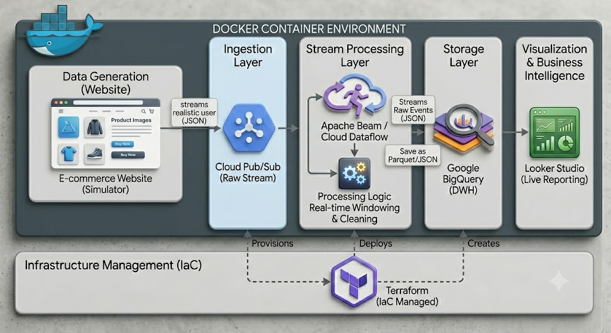

Problem Statement
E-commerce platforms generate massive volumes of user activity data, including page views, add-to-cart events, and purchases, every second[cite: 1]. Traditional relational databases are unable to process this high-velocity, unstructured streaming data in real-time, resulting in significant latency[cite: 1]. The challenge was to architect a system capable of handling high-volume event streams without data loss while ensuring low-latency analytics[cite: 1].
Solution Approach
I designed a cloud-native, scalable architecture to bridge the gap between raw data ingestion and business intelligence[cite: 1]:
- Ingestion: Used Google Cloud Pub/Sub to decouple data producers from the processing engine, ensuring durability[cite: 1].
- Processing: Implemented Apache Beam on Cloud Dataflow to perform real-time windowing and data enrichment[cite: 1].
- Storage & Analytics: Streamed processed records directly into BigQuery to enable instantaneous dashboarding via Looker Studio[cite: 1].
Technical Challenges
The primary challenge was managing the complexity of out-of-order event data and ensuring the infrastructure could scale automatically[cite: 1]. I addressed this by implementing sliding windows in the Apache Beam pipeline to handle time-series data accurately and utilizing Terraform (IaC) to ensure that environment configuration was reproducible and error-free[cite: 1].
System Architecture
